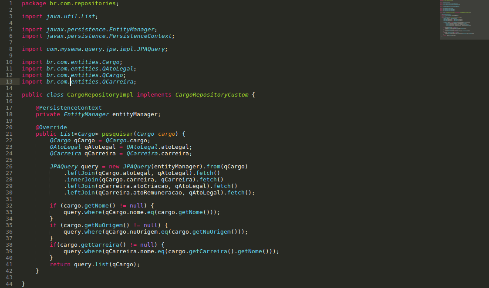

PARTE 01 - Quando e por que usar o QueryDSL?
O QueryDSL pode ser usado em seu projeto quando existir a necessidade de fazer consultas no banco de dados que sejam mais complexas, seja com uso de alguma ferramenta de ORM, como o Hibernate, ou com o SQL. Digamos então que você possui uma tela de pesquisa com muitos campos para filtro da mesma. Fazer uma pesquisa filtrando os dados buscados no banco de dados através do uso somente do SQL, dependendo da quantidade de campos e das restrições necessárias para que seja retornado os dados corretos, pode ficar bastante complexo. Mesmo com o uso de uma ferramenta como o Hibernate junto com o JpaRepository (Java) a pesquisa ainda fica difícil de ser implementada, justamente pela quantidade de campos e restrições que podem existir. É a partir desse momento que o QueryDSL entra em cena :)

PARTE 02 - Configurando o QueryDSL
Primeiro adicionamos as dependências do QueryDSL no arquivo pom.xml do nosso projeto Java com Spring.
Após adicionar as depêndencias é necessário atualizar o projeto fazendo um Clean e um Update no maven (caso não esteja utilizando o maven, realizar procedimento de acordo com a ferramenta de seu uso atual) para que os tipos Query de cada classe sejam gerados.
Os tipos Query de cada classe são gerados para serem utilizados pelo QueryDSL nas suas consultas ao banco de dados.
PARTE 03 - Fazendo consultas com o QuerySQL
Digamos que em nosso sistema temos a seguinte estrutura, onde uma Pessoa possui um ou mais Cargo e essa lista de Cargo é FetchType LAZY, ou seja, se quisermos recuperar as informações dessa lista precisamos fazer um JOIN entre Pessoa e Cargo.
Recuperar todos os usuários do sistema sem ter o problema de LazyInitializationException, por exemplo, se torna bastante simples com o QueryDSL, pois basta fazer uma consulta como a figura abaixo.
Com o query adicionamos as condições que quisermos, e claro, elas podem ser passadas como parâmetro do método também!
E por momento é isso pessoal. Quaisquer dúvidas, sugestões e afins é só comentar aqui embaixou ou entrar em contato por email. Em uma outra postagem vou falar sobre o MyBatis para também fazer consultas mais complexas com Java, bancos relacionais e Spring :)